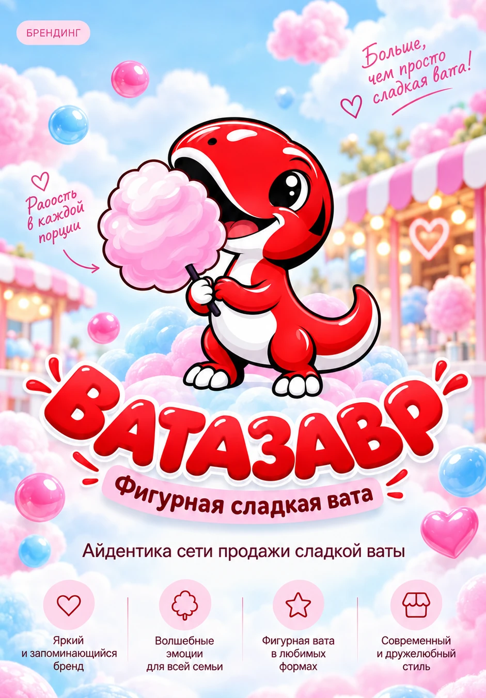
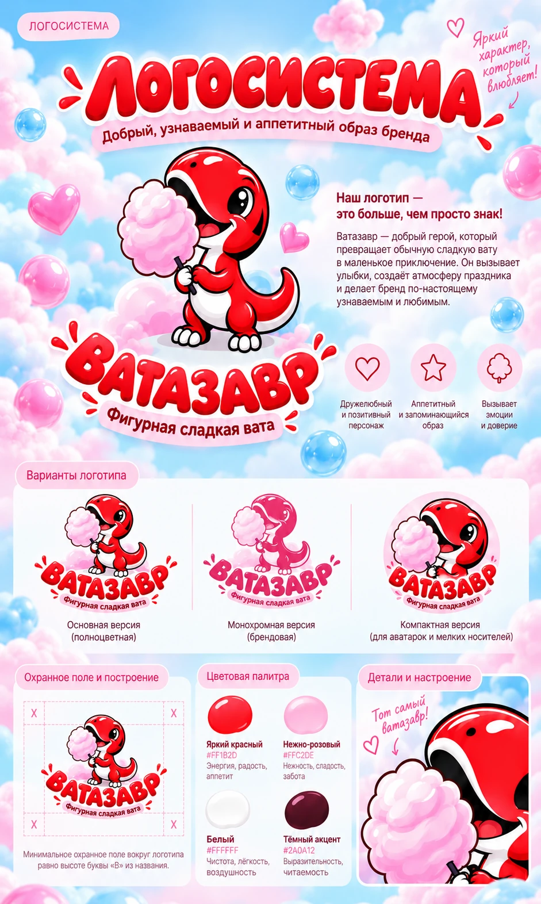
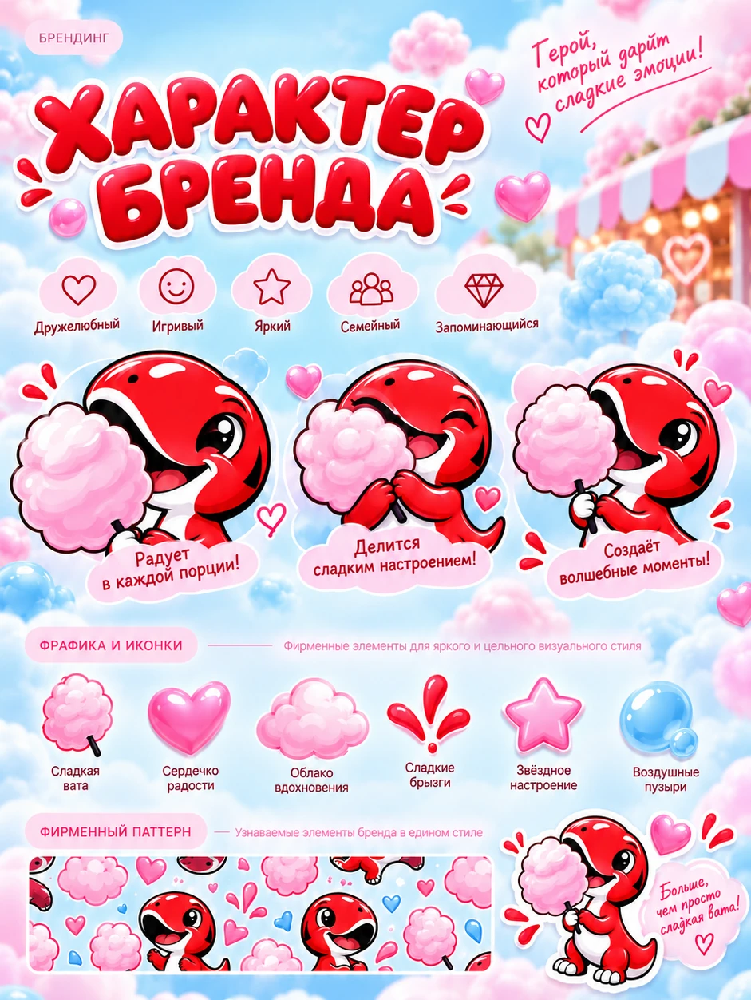
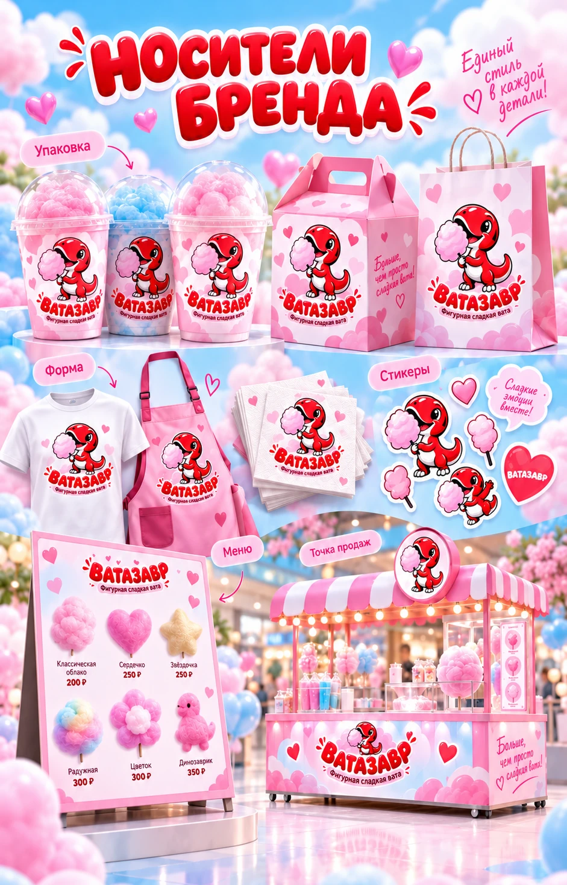
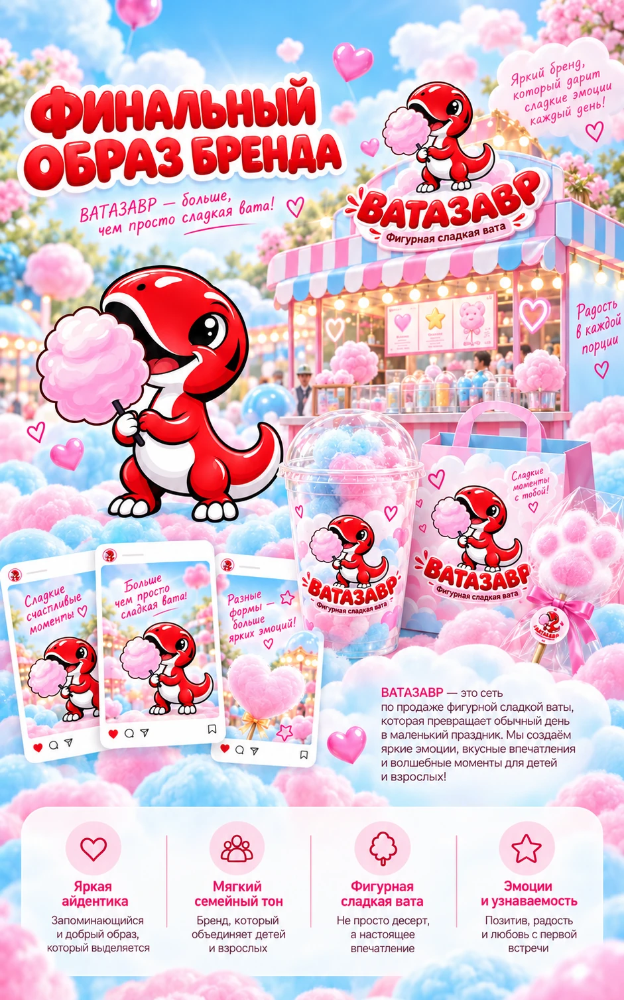

ЛОГОТИПЫ / ФИРМЕННЫЙ СТИЛЬ
Ватазавр
Логотип, персонаж и фирменный стиль бренда фигурной сладкой ваты: логосистема, характер персонажа и носители.





ЛОГОТИПЫ / ФИРМЕННЫЙ СТИЛЬ
Логотип, персонаж и фирменный стиль бренда фигурной сладкой ваты: логосистема, характер персонажа и носители.




